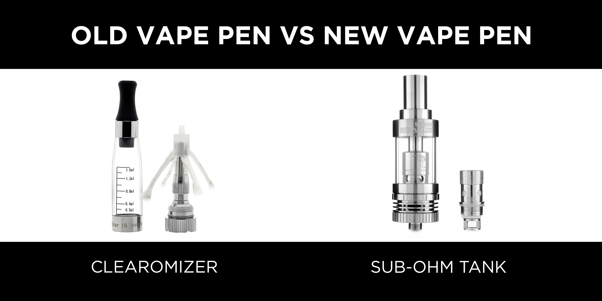
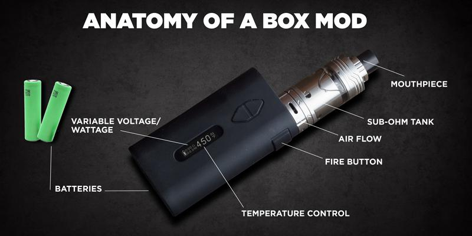
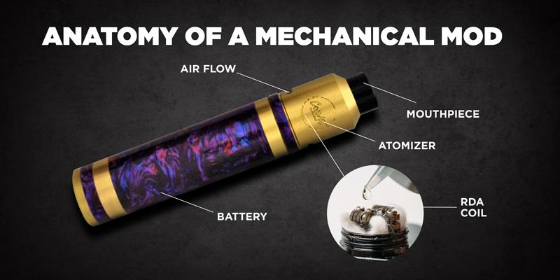
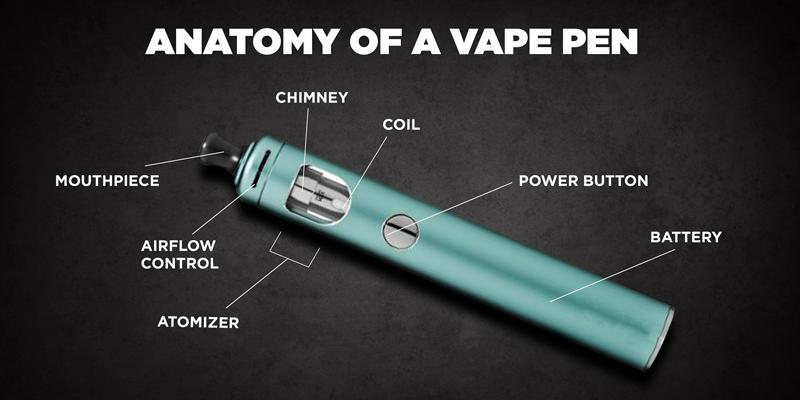
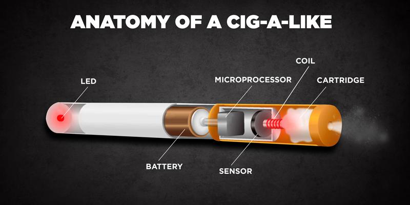
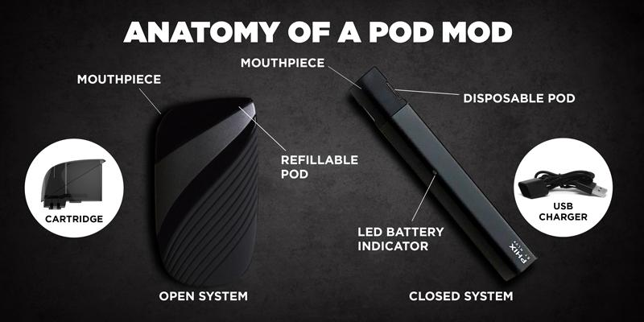

WHAT ARE THE DIFFERENT TYPES OF VAPES OUT THERE?

Vaping devices can be broken down into 4 categories:
1. Cig-A-Likes (First Generation)
2. Vape Pens (Second Generation)
3. Mods (Third Generation)
4. Pod Mods
Old Vs New Vapes
New Vapes are essentially vape pens updated with sub-ohm tanks. When vape pens originally came out in the mid-2000’s, the devices were equipped with a less powerful clearomizer tank. Essentially, tube mods have become the new go-to device for beginners since it is equipped with the latest vaping technology for better performance. Most vape pens on the market currently are tube mods and have one button to press
Box Mods:
Box mods are the most sophisticated and powerful devices out on the market currently. You have probably seen vapers with a box-shaped device blowing out huge clouds. Besides the shape of the device, box mods have more battery power than previous vapes and also come with advanced features to personalize your vaping experience. Box mods, in general, have these features. 1. Sub-ohm tank 2. External batteries 3. Variable Voltage/Wattage 4. Temperature Control (some have this feature) 5. LED Screen to display information such as battery life, ohmmeter, puff counter, voltage/wattage setting, and temperature setting. 6. Airflow control on Atomizer
Mechanical Mod:
Mechanical Mod is a simple device with pure battery power that is housed in either a metallic tube or in a box. Mechanical mods are used by vape enthusiasts who build their own atomizers to create an ideal vaping experience. Vapers build their own coils instead of buying them and this allows vapers to customize their experience to their liking. These self-constructed atomizers are called Rebuildable Drip Atomizers (RDA) where e-liquid is dripped on top of custom built coils. Vapers also use Rebuildable Tank Atomizers (RTA) where it functions as a tank
Vape pens
Vape pens today are vastly different than the vape pens in the mid-2000’s. As we have stated above, the vape pens today have features found in third generation mods to equip the older style devices with the power of today’s vaping technology. Let’s cover the different variations of vape pens found today: Four distinct features make up the different kind of vape pens today: Fixed Voltage Sub-ohm tanks Variable Voltage Variable Temperature
WHAT IS A CIG-A-LIKE?
You may not know what a Cig-A-Like is, but you most likely have seen one before. Cig-A-Likes are devices often seen in gas stations and used as an entry level vaping device. The devices are called cig-a-likes because of the similar appearance and size to a real cigarette. This is also where the term electronic cigarettes originated from. The idea behind it was to mimic the smoking experience as close as possible to make a smoother transition from smoking to vaping.
WHAT IS A POD MOD?
Pod mods are the latest devices that are gaining popularity in the vaping community. Pod Mods are low wattage devices that are similar to a cig-a-like and are used with nicotine salt e-juices. Pod systems are a new and improved version of the cig-a-like, and they are the closest device on the market right now to smoking a cigarette.